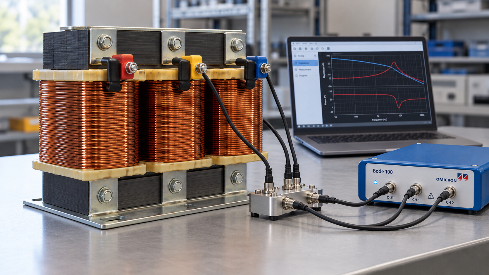

Technische Fragestellung
Das Betriebsverhalten eines industriellen elektrischen Effizienzfilters soll anhand von Messungen modelliert und überprüft werden.

KI-generiertes SymbolbildMethodischer Ablauf
- 01Elektrische Messungen
- 02Parameteridentifikation
- 03LTspice / Simscape
- 04Messdatenabgleich
- 05Bewertung & Publikation
Ergebnisse & Arbeitsprodukte
Entwicklung und Validierung eines digitalen Zwillings zur Untersuchung des Betriebsverhaltens und Energieeinsparpotenzials; Veröffentlichung im IEEE Open Access Journal of Power and Energy.
Abgrenzung der Darstellung
Die Abbildungen sind vereinfachte schematische Darstellungen. Sie ersetzen keine Messdaten, Sicherheitsbewertung oder vollständige technische Dokumentation.
IEEE · 2026
A Waveform-Driven Framework for Pre-Installation Assessment of Series-Connected Passive Inductive Filter Performance in Industrial Power Systems
IEEE Open Access Journal of Power and Energy
Publikation lesen ↗DOI: 10.1109/OAJPE.2026.3743650